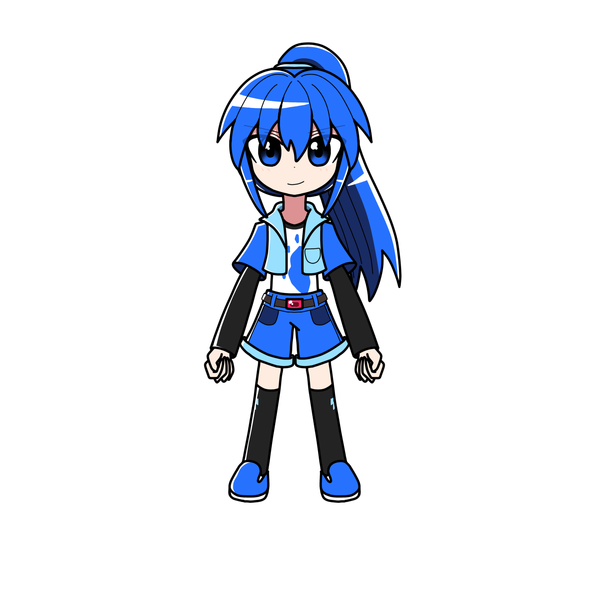

碓氷 ジゼル

碓氷ジゼル（ウスイ ジゼル）とは
プリズムアミュレットに登場する主人公の一人である。
また、サークルユニット「BLUΞ BΛSTION」のリーダーを務めている。
バンドでの担当はギター。
概要
プロフィール
| 種族 | ドール |
|---|---|
| 性別 | 女性 |
| 年齢 | 15歳 |
| 誕生日 | 11月8日 |
| 身長 | 150cm |
| 血液型 | B型 |
| 出身 | メマーレ |
| イメージカラー | 青 |
| イメージCV |
人物像
外見
濃い青色の長髪。
基本的にポニーテールにしている。
性格
男勝りで気が強い性格。
基本的にはしっかり者でツッコミに回ることが多い。
基本的に他者には爽やかで優しい。
しかし気心が知れた仲の相手には、
口が悪くなったりする。
さらに、一度敵と認識した相手には
かなり棘のある態度になる。
根は嫉妬深く気性が荒く、かつ捻くれている。
一応常識は弁えており、言って良いことと悪いことの
分別は付く（そのため言いたいことをそのまま言う
アリスをどつくところもある）。
過去のことから、
大人に対して一定の不信感を抱いている。
と言っても表向きは普通に接する。
実は執着心が強く、自分にとって
大切な物が誰かに奪われることを恐れる。
運動神経が抜群。足が速い。
特にサッカーが得意で、休み時間や放課後に
男子達とサッカーをすることも。
反面勉強に関しては成績が良い方とは言えない。
授業そのものは真面目に聞いているものの、
予習復習をやらない。テスト勉強もあまりしないため、
基本その時授業で聞いた内容や課題で覚えた内容のみで勝負する。
手先が器用で、細かい作業が上手。
なのだが本質はかなり面倒くさがりで大雑把なため、
途中でイラついて作業が雑になる。
ちなみに、元々は左利きだったのだが、
母に矯正され、現在は交差利き（箸やペンは右手だが、
糸通しなどは左手を使いがち）。
デリカほどではないが、ファッションを考えることが好き。
デニム系のズボンを好み、
ストリート系のボーイッシュな服装が好き。
食べ物の美味しい不味いは理解できるが、どこか味覚音痴。
麦茶とウーロン茶の違い、
カスタードクリームと生クリームの違いが分からないなど。
実は多重人格。
所謂「前世」との人格が混ざっている。
上記の「嫉妬深く気性が荒い」という性格は前世としての
性格が影響しているもの。
ズボンのベルトについている石の色で人格の判別が可能。
口調
一人称は「あたし」
能力
水属性。
呪文は「フィールアファソラシフューチルシ」
経歴
活躍
人物関係
虹坂 アリス
勝負を吹っ掛けられればそれに乗っかる。
ちなみに勝率は7割ぐらい。
木川田 ソフィア
依存している。
碓氷 シエル
双子の妹。